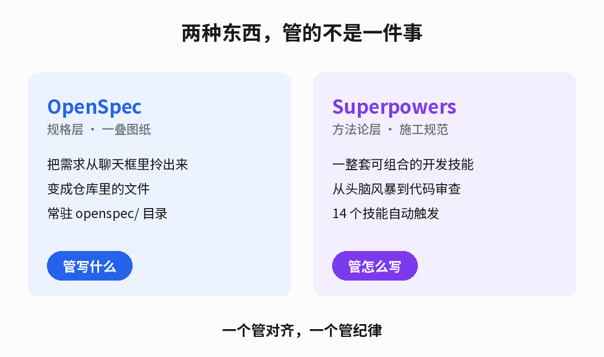
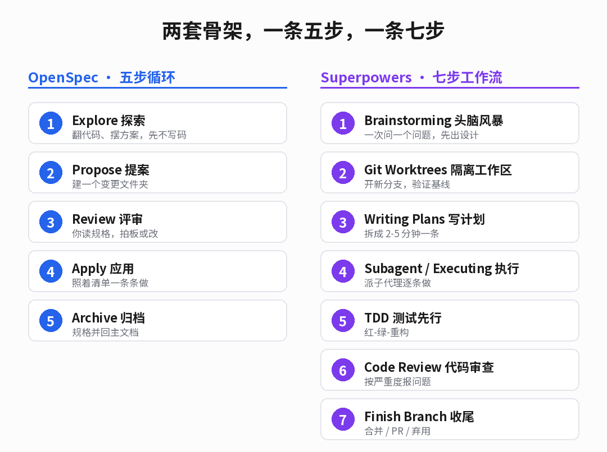
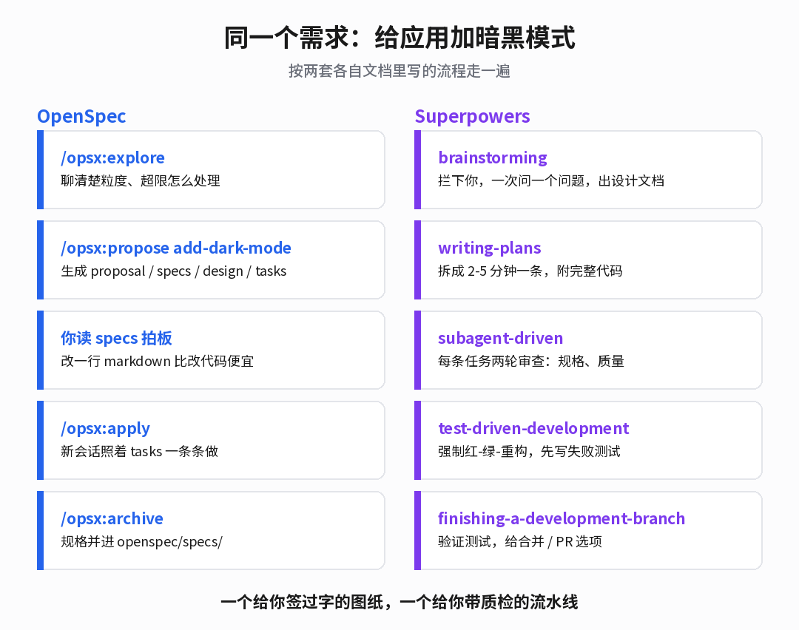

一个把需求变成文件，一个把流程变成技能。
最近在同一个仓库里，前后脚装了两样东西，Superpowers 和 OpenSpec。
两个都是开源的，都是 MIT，最近都在 GitHub 上被翻来覆去地转。名字摆在一起像一对竞品，真用起来，根本不是一回事。
先把结论放这儿。
OpenSpec 管的是写什么，Superpowers 管的是怎么写。
这句话看着像废话，但它决定了你什么时候该想起哪一个。
1
一个管做什么，一个管怎么做
OpenSpec 是一层规格。它全部的动作，是把需求从聊天框里拎出来，变成仓库里的文件。
你每提一个变更，它就在 openspec/changes/ 下面给这个变更开一个文件夹。里面四样东西，proposal 写为什么做、specs 写验收标准、design 写技术方案、tasks 是一份能一条条打勾的清单。
Superpowers 不是一个工具，是一整套方法论。它往你的编程助手里塞了 14 个技能，从头脑风暴一路排到分支收尾，而且这些技能自动触发，你不用记命令。
一个像一叠图纸，摊在桌上，白纸黑字。
一个像一本施工规范，平时看不见，你一动手它就从旁边拦住你。
2
两条骨架，差在谁推着走
把两边的骨架抽出来，一眼就看清楚了。

左边五步靠你敲命令，右边七步靠它自己识别场景。
OpenSpec 是一条五步循环。Explore 探索、Propose 提案、Review 评审、Apply 应用、Archive 归档。推进的力气来自你，你得敲 /opsx:explore，你得敲 /opsx:apply。
/opsx:explore 我想加暗黑模式，但不确定怎么做干净
/opsx:propose add-dark-mode
/opsx:apply
/opsx:archive
Superpowers 是七步。brainstorming、隔离工作区、写计划、子代理执行、TDD、代码审查、分支收尾。它不靠你敲命令，靠它自己判断你现在走到了哪一步。
它文档里有一句近乎偏执的话，只要你有百分之一的可能觉得某个技能用得上，你就必须调用它。
一个是你推着走，一个是它推着你走。
3
同一个需求，两套走法
光比骨架还是抽象。拿同一个需求过一遍，差别立刻具体。
需求就一行，给应用加个暗黑模式。

同样的需求，左边落一份规格，右边落一条流水线。
走 OpenSpec，第一步是 explore，它翻你的样式代码，摆出几个方案，问你暗色的粒度、要不要跟随系统。想清楚了 propose，它把那个变更文件夹整个建出来。你读 specs，觉得对了，才进 apply。
这一步有个细节值得说。apply 之前它建议你新开一个会话，理由是实现的上下文越干净越好。做完 archive，那份规格就并进 openspec/specs/，成了系统的正式说明书。
走 Superpowers，第一步是 brainstorming，它先把你拦下来。一次问一个问题，不让你一口气把需求倒完，然后摆出两三个方案，产出一份设计文档。
你点头，它进 writing-plans，把活拆成 2 到 5 分钟一条的任务，每条都带着确切的文件路径、完整的代码、跑测试的命令。它写计划时的假设很狠，官方原话是，假设来接手的是一个热情但品味差、没判断力、没有项目背景、还讨厌写测试的初级工程师。
然后 subagent-driven-development 上场。每个任务派一个全新的子代理，做完先查一遍符不符合规格，再查一遍代码质量过不过关，两关都过了才往下走。实现全程被 TDD 技能按着跑红绿重构。
OpenSpec 交给你一份你和 AI 都签过字的图纸，Superpowers 交给你一条每个环节都有人查的流水线。
4
一个松，一个紧
这两套东西最根本的分歧，是对该不该信任临场发挥这件事的态度。
OpenSpec 明说自己 fluid not rigid，不卡阶段，任何一份产物你什么时候改都行。它把判断权留给人，你随时可以回头改规格，不需要走一遍仪式。
Superpowers 反过来，它几乎不信任你和 AI 的临场决定。brainstorming 里有一条硬门禁，设计没被批准之前，不许写一行代码、不许建项目。它把这类不许商量的技能叫 rigid，跟另一种可以随机应变的 flexible 明确分开。
它还有一条我很喜欢的收尾技能，verification-before-completion。原则就六个字，先看证据，再下结论。
一个把选择权留给人，一个把纪律写进流程。
5
装起来，门槛在哪
两边都不难装，但路子不一样。
OpenSpec 是个 npm 包，需要 Node 20.19 以上。一条命令全局装，然后进项目初始化。
npm install -g @fission-ai/openspec@latest
cd your-project
openspec init
它支持三十多种编程助手。斜杠命令的拼写随工具变，/opsx:propose 是标准写法，Cursor 和 Copilot 里是 /opsx-propose，Amazon Q 是 @opsx-propose，Codex 是 $openspec-propose。init 会告诉你该用哪个。
Superpowers 走各家插件市场，Claude Code、Codex、Cursor、Copilot CLI、Gemini CLI、OpenCode、Factory Droid 都有入口，装完技能自动触发，不用额外配置。
两边都会提模型。OpenSpec 建议用高推理的模型来做规划和实现。Superpowers 更细，它在子代理阶段按任务复杂度分配模型，纯机械的活交给便宜快的，架构和审查交给最强的。
有个细节能看出 Superpowers 的性格。它连该用哪个模型都想替你想好，省下来的都是钱。
6
到底选哪个
先说结论，这不是二选一。
五个场景，各走各的门。
想先对齐需求、快速迭代，用 OpenSpec。要 AI 长时间自主干活、你又在意代码质量，用 Superpowers。跨多个仓库、要让团队共用一份规格，看 OpenSpec 正在测试的 Stores。想强制 TDD、强制逐条审查，只有 Superpowers。
最顺的用法其实是叠起来。OpenSpec 负责把做什么钉死，Superpowers 负责把怎么做管住。
一个管对齐，一个管纪律。
这两套东西摆在一起看，其实映出一个挺有意思的转折。
AI 写代码的能力，早就够用了。现在真正拖后腿的，不是它不够聪明，是它和你没对齐，是它一放手就跑偏。
OpenSpec 治第一种病，Superpowers 治第二种。
规格和纪律，才是这条路上真正稀缺的东西。
OpenSpec · Fission AI | Superpowers · Prime Radiant
两套工具的事实、命令与流程均取自各自官方文档与仓库 README。两个项目均为 MIT 协议。